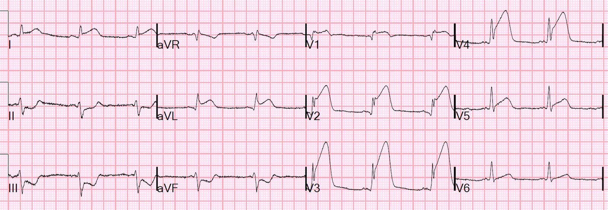
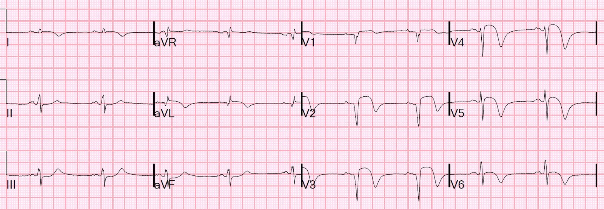
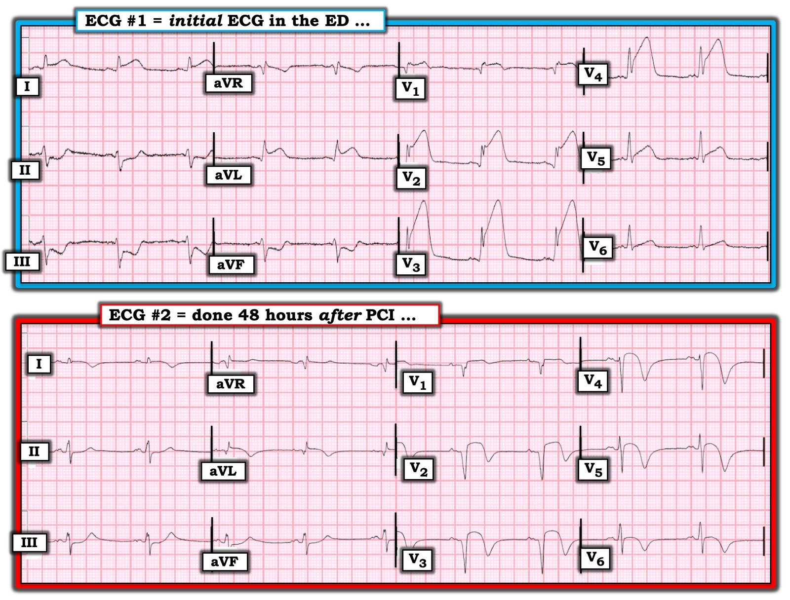

09/12/2019 — Ngộ độc CO. Điện tâm đồ thường quy ghi trước khi điều trị oxy cao áp… Liệu chúng có liên quan?
Bản dịch tiếng Việt của bài "CO poisoning. Routine ECG recorded before hyperbaric therapy….Are they related?" – Dr. Smith’s ECG Blog. Giữ nguyên toàn bộ 5 hình ảnh của bản gốc.
Bệnh nhân này đang sửa chiếc xe tải của mình trong một ga-ra không thông gió và xe vẫn đang nổ máy. Anh cảm thấy chóng mặt rồi mất ý thức. Điều tiếp theo anh nhớ được là tỉnh dậy trên xe cứu thương. Lần cuối bệnh nhân được thấy còn bình thường là lúc 09:00 sáng và được phát hiện nằm gục lúc 10:30 sáng. Bệnh nhân phủ nhận đau ngực, đau bụng, khó thở (SOB) hay bất kỳ triệu chứng nào khác, tuy nhiên khi được hỏi cụ thể thì anh có thừa nhận cảm giác đè nặng ngực.
Bệnh nhân được ghi điện tâm đồ thường quy trước khi điều trị oxy cao áp vì ngộ độc CO:


Kết quả nồng độ CO trả về là 34%.
Khai thác thêm tiền sử cho thấy bệnh nhân đã được đặt stent LAD đoạn gần vì nhồi máu cơ tim không do tắc (Non-Occlusion MI) hơn một năm trước, và đã dùng clopidogrel trong một năm nhưng hiện không còn dùng nữa.
Phòng thông tim (cath lab) đã được kích hoạt.
Bác sĩ can thiệp nói với bệnh nhân rằng điện tâm đồ của anh có thể chỉ là hậu quả của ngộ độc CO.
Tôi lắc đầu vì điều này gần như không thể xảy ra chỉ do ngộ độc CO. Điều đó có thể xảy ra nếu có một chỗ hẹp cực kỳ khít ở LAD đoạn gần, nhưng một STEMI như thế này không bao giờ là hậu quả của riêng ngộ độc CO.
Với tôi, rõ ràng đây là tắc LAD đoạn gần, có thể tại vị trí stent trước đó.
Quyết định được đưa ra là đến phòng thông tim trước, rồi sau đó mới vào buồng oxy cao áp để điều trị oxy cao áp.
Chụp mạch vành: Tổn thương thủ phạm: tắc trong stent do huyết khối ở LAD đoạn gần
Siêu âm tim lúc 24 giờ:
Rối loạn vận động thành khu trú – vách đoạn xa, thành trước và mỏm, vô động.
Rối loạn vận động thành khu trú – thành trước bên, vô động.
Rối loạn vận động thành khu trú – thành trước vách, vô động.
Sau can thiệp, bệnh nhân được điều trị nhiều đợt oxy cao áp trong buồng oxy cao áp đẳng cấp thế giới của chúng tôi (xem các hình ảnh tại đường link này). Bệnh nhân thở oxy 100% ở áp suất 2 atmosphere, nhờ đó pO2 có thể lên tới hơn 1000 mm Hg.
Việc xây dựng buồng oxy cao áp của Hennepin County Medical Center do Dr. Cher Adkinson (bác sĩ cấp cứu của HCMC, đã nghỉ hưu) tổ chức và hiện do đội ngũ Y học cấp cứu HBO xuất sắc hiện nay của chúng tôi vận hành, trong đó có giám đốc HBO Chris Logue.
Điện tâm đồ lúc 48 giờ, sau khi động mạch đã được mở thông và nồng độ CO đã trở về bình thường:


Poor Microvascular Reperfusion (“No Reflow”): Best Diagnosed by ECG (Tái tưới máu vi mạch kém (“không tái lưu”): chẩn đoán tốt nhất bằng điện tâm đồ)
Troponin I Abbott đỉnh là 401,00 ng/mL (đây là một trong những giá trị troponin cao nhất mà tôi từng thấy hoặc từng nghe nói tới).
Another case of CO, with ST depression: What is the treatment for this subendocardial ischemia? (Một ca ngộ độc CO khác, có ST chênh xuống: điều trị thiếu máu cục bộ dưới nội tâm mạc này như thế nào?)
Carbon monoxide đẩy oxy ra khỏi hemoglobin, và do đó làm giảm độ bão hòa oxy một cách thực chất, trong ca này giảm 34%, xuống còn 66%. Nhưng CO cũng gắn với cytochrome oxidase để ức chế sự tạo thành ATP. Do đó, tác động của nó cũng giống như thiếu máu cục bộ.
Chúng tôi coi bản thân tình trạng thiếu máu cục bộ cơ tim (trên điện tâm đồ, hoặc do troponin tăng) là một chỉ định điều trị oxy cao áp (HBO) cấp cứu, ngay cả khi không có các chỉ định khác như tổn thương thần kinh, mất ý thức, nồng độ trên 40%, có thai, hoặc các chỉ định khác.
Chúng tôi điều trị nhiều bệnh lý mạn tính bằng oxy cao áp, nhưng luôn mở cửa 24/7/365 cho các trường hợp cấp cứu, bao gồm ngộ độc CO, thuyên tắc khí, bệnh giảm áp và tắc động mạch trung tâm võng mạc.
Nghiên cứu của Dr. Adkinson tại HCMC, được công bố trên JAMA, cho thấy tổn thương cơ tim (biểu hiện bằng tăng troponin, nhưng cũng bằng thiếu máu cục bộ trên điện tâm đồ) thường gặp trong ngộ độc carbon monoxide và liên quan độc lập với tăng nguy cơ tử vong khi theo dõi 7 năm (38% so với 15%). Một công bố sau đó trên JACC báo cáo rằng tổn thương cơ tim hoàn toàn không được dự đoán bởi nồng độ CO.
Tuy nhiên, STEMI hiếm gặp trong ngộ độc CO, chỉ có một số báo cáo ca bệnh. Tất cả các báo cáo đều cho thấy nguyên nhân là tắc mạch vành.
Vậy điều này có liên quan đến nhiễm độc CO không?
Một số tác giả cho rằng nhiễm độc CO làm tăng kết tập tiểu cầu và tăng khả năng tạo huyết khối. Vì vậy, có thể nhiễm độc CO đã gây ra huyết khối trong stent và STEMI.
Nhưng con đường chung cuối cùng dẫn đến STEMI trong nhiễm độc CO là tắc mạch vành, chứ không phải bản thân tình trạng nhiễm độc CO. Những bệnh nhân như vậy nên được đưa đến phòng thông tim trước, và chỉ sau đó mới vào buồng oxy cao áp.
Tài liệu tham khảo
Late stent thrombosis secondary to carbon monoxide poisoning (Huyết khối stent muộn thứ phát do ngộ độc carbon monoxide)
A Case of Acute Carbon Monoxide Poisoning Resulting in an ST Elevation Myocardial Infarction (Một ca ngộ độc carbon monoxide cấp dẫn đến nhồi máu cơ tim ST chênh lên)
Ikeda H, và cs. Free oxygen radicals contribute to
platelet aggregation and cyclic flow variations in
stenosed and endothelium-injured canine coronary
arteries. J Am Coll Cardiol 1994; 24: 1749–1756.
Marius-Nunez AL. Myocardial infarction with normal
coronary arteries after acute exposure to carbon
monoxide. Chest 1990; 97: 491–494. Điện tâm đồ trong nghiên cứu này cho thấy thiếu máu cục bộ lan tỏa, nhưng không có ST chênh lên khu trú.

===================================
BÌNH LUẬN CỦA TÔI, bởi KEN GRAUER, MD (9/12/2019):
===================================
Ca này đặt ra một câu hỏi hấp dẫn: liệu ngộ độc CO tự nó có thể là nguyên nhân gây ra STEMI cấp ở bệnh nhân này hay không?
- Cần lưu ý — bệnh nhân này đã được đặt stent LAD đoạn gần vì nhồi máu cơ tim không do tắc hơn 1 năm trước.
- Bệnh nhân đến khoa cấp cứu (ED) vì mất ý thức do ngộ độc CO cấp (nồng độ CO ban đầu = 34%). Mặc dù bệnh nhân phủ nhận “đau ngực” — về sau bệnh nhân lại thừa nhận có “cảm giác đè nặng ngực” …
Tôi cho rằng việc xem xét kỹ 2 điện tâm đồ trong ca này đáng được bàn luận thêm.
- Cho rõ ràng — tôi đã đưa lại 2 bản ghi này trong Hình 1.


Như Dr. Smith đã nêu — Điện tâm đồ #1 (là điện tâm đồ đầu tiên được ghi tại khoa cấp cứu, trước khi chuyển bệnh nhân đi điều trị oxy cao áp) — cho thấy một STEMI rõ ràng, lan rộng, gần như chắc chắn là hậu quả của tắc LAD đoạn gần cấp tính.
CÂU HỎI:
- Câu hỏi #1 — BẠN thấy tất cả những dấu hiệu điện tâm đồ cụ thể nào ở điện tâm đồ #1?
- Câu hỏi #2 — Tại sao điện tâm đồ #1 có khả năng biểu hiện tắc LAD đoạn gần cấp tính?
- GỢI Ý cho Câu hỏi #2: Nếu bạn không thấy 5 lý do vì sao điện tâm đồ #1 có khả năng biểu hiện tắc LAD đoạn gần cấp tính — HÃY QUAY LẠI và XEM LẠI.
TRẢ LỜI: Các dấu hiệu điện tâm đồ sau đây ủng hộ khả năng có tắc LAD đoạn gần cấp tính ở điện tâm đồ #1:
- Đoạn ST chênh lên bắt đầu sớm ngay từ chuyển đạo V1. Khi tắc LAD đoạn giữa hoặc đoạn xa — ST chênh lên ở các chuyển đạo trước tim thường bắt đầu muộn hơn (tức là, ở chuyển đạo V2 hoặc V3). Xét đến biên độ tương đối nhỏ của phức bộ QRS ở chuyển đạo V1 — mức ST chênh lên ở chuyển đạo ngực đầu tiên này là đáng kể. Sau đó ST chênh lên trở nên cực độ ngay từ chuyển đạo V2.
- Có ST chênh xuống soi gương rõ rệt ở mỗi chuyển đạo thành dưới. Các thay đổi soi gương ở các chuyển đạo thành dưới ít có khả năng xuất hiện hơn nhiều khi STEMI thành trước cấp là do tắc LAD đoạn giữa hoặc đoạn xa.
- Có ST chênh lên đáng kể ở chuyển đạo aVL — gần như là “hình soi gương đối ngược” của ST chênh xuống thấy ở chuyển đạo III. ST chênh lên đáng kể ở chuyển đạo aVL ít có khả năng xuất hiện khi STEMI thành trước cấp là do tắc LAD đoạn giữa hoặc đoạn xa. Cũng có ST chênh lên ở chuyển đạo I — mặc dù chuyển đạo aVL là chỉ điểm đáng tin cậy hơn nhiều để nghi ngờ tắc LAD đoạn gần.
- Có vẻ như có hình ảnh RBBB không hoàn toàn ở điện tâm đồ #1 — biểu hiện bằng R’ tận ở chuyển đạo V1, kèm theo sóng S tận hẹp ở chuyển đạo V6. Rõ ràng là phức bộ QRS không đủ rộng để được xem là RBBB hoàn toàn — và không có sóng S tận ở chuyển đạo bên I. Nhưng bình thường, phức bộ QRS ở chuyển đạo V1 phải âm là chủ yếu, và chắc chắn là không phải như vậy ở điện tâm đồ #1.
- Có LAHB — biểu hiện bằng các phức bộ QRS âm là chủ yếu ở mỗi chuyển đạo thành dưới. Kết hợp với RBBB không hoàn toàn mới mà chúng tôi nghi ngờ — điều này có thể tạo thành một blốc hai phân nhánh mới — và sự kết hợp các rối loạn dẫn truyền này, khi mới xuất hiện và xảy ra cùng với STEMI thành trước cấp, là một tổn thương đặc trưng có ý nghĩa tiên lượng khi có tắc LAD đoạn gần cấp tính. RBBB/LAHB (hoặc IRBBB/LAHB) ít có khả năng xảy ra khi tắc LAD ở vị trí xa hơn.
Để Hoàn tất Câu Trả lời cho Câu hỏi #1: BẠN còn thấy thêm những dấu hiệu điện tâm đồ nào ở điện tâm đồ #1 mà chưa được đề cập?
- Đã có s óng Q ở nhiều chuyển đạo trên điện tâm đồ #1. Mặc dù sóng Q ở chuyển đạo aVL rất nhỏ và hẹp (và có thể là một sóng q vách “bình thường”) — nhưng trong bối cảnh STEMI thành trước cấp diện rộng rõ ràng kèm ST chênh lên ở chuyển đạo aVL — người đọc buộc phải coi sóng Q ở aVL này là một “sóng Q nhồi máu”.
- Ngoài ra — có sóng Q nhỏ-nhưng-chắc-chắn-có-mặt ở các chuyển đạo V1, V2 và thậm chí cả V3! Sóng Q ở chuyển đạo V1 là lý do khiến hình ảnh RBBB không hoàn toàn này biểu hiện dạng QR’ thay vì rSR’. Và, mặc dù sóng Q nhỏ ở chuyển đạo V2 và rất bé ở chuyển đạo V3 — lẽ ra phải hoàn toàn không có sóng Q ở các chuyển đạo này khi có hình ảnh RBBB không hoàn toàn như vậy. Các sóng Q thành trước này đều là những dấu hiệu “thật”, và đi kèm với ST chênh lên rất rõ, chúng báo trước điều sắp xảy ra trên điện tâm đồ #2.
- Có T–QRS-D (Terminal QRS Distortion – biến dạng phần cuối QRS) rõ rệt ở các chuyển đạo V2 và V3. Về hình thái, T-QRS-D cũng có ở chuyển đạo V4 trên điện tâm đồ #1 — mặc dù chúng tôi định nghĩa T-QRS-D là sự vắng mặt của cả sóng J lẫn sóng S ở hoặc chuyển đạo V2 hoặc V3, chứ không dựa vào hình dạng ở chuyển đạo V4 (BẤM VÀO ĐÂY — để xem minh họa và bàn luận đầy đủ về khái niệm T-QRS-D trong Bình luận của tôi ở cuối bài đăng ngày 14/11/2019 này trên Dr. Smith’s ECG Blog). LƯU Ý— Hiển nhiên, không cần đến T-QRS-D để chẩn đoán STEMI thành trước cấp diện rộng trên bản ghi này. Nhưng điện tâm đồ #1 là một ví dụ tuyệt vời về hiện tượng này, một hiện tượng đôi khi có thể rất quan trọng cần nhận ra (XEM ca ngày 3/7/2018 — trong đó tôi tóm tắt “câu trả lời NGẮN” ở Hình 1 của tôi ở tận CUỐI bài đăng đó, với phần bàn luận chi tiết của Dr. Meyers ở phía trên).
Bây giờ HÃY SO SÁNH Điện tâm đồ #1 với Điện tâm đồ #2: Dr. Smith đã tóm tắt các thay đổi điện tâm đồ giữa 2 bản ghi này trong chú thích của Hình thứ 2 trong phần bàn luận của ông ở trên. Nhưng để MÀI GIŨA kỹ năng đọc điện tâm đồ của bạn — TẤT CẢ các thay đổi điện tâm đồ cụ thể giữa 2 bản ghi này là gì?
TRẢ LỜI CỦA CHÚNG TÔI:
- Mặc dù mức ST chênh lên trên điện tâm đồ #2 đã giảm rất nhiều so với lúc ghi điện tâm đồ #1 — vẫn còn ST chênh lên khoảng 2-3 mm ở các chuyển đạo V2 đến V5, cũng như mức ST chênh lên tồn lưu tương đối lớn ở các chuyển đạo I và aVL (nhất là khi xét đến kích thước rất nhỏ của QRS ở các chuyển đạo bên cao này).
- Tương tự, mặc dù mức ST chênh xuống soi gương ở các chuyển đạo thành dưới đã giảm hẳn trên điện tâm đồ #2 — vẫn còn một mức thay đổi ST-T soi gương đáng lo ngại.
- Các sóng Q nhỏ ở thành trước mà chúng tôi đã nêu trên điện tâm đồ #1 — đã tiến triển thành phức bộ QS lớn ở các chuyển đạo V1 đến V3 trên điện tâm đồ #2. Theo sau đó là tình trạng mất biên độ sóng R đáng kể ở các chuyển đạo ngực bên V4 đến V6, cũng như ở các chuyển đạo bên cao I và aVL. Điểm Tinh tế: Mặc dù mất biên độ sóng R ở chuyển đạo aVL — sóng Q ở chuyển đạo này lại sâu hơn và rộng hơn.
- Các chuyển đạo có ST chênh lên trên điện tâm đồ #1 — nay cho thấy sóng T đảo ngược sâu. Đây là một thay đổi tiến triển.
- Hình ảnh RBBB không hoàn toàn thấy trên điện tâm đồ #1 đã hết.
- Không còn đủ tiêu chuẩn blốc phân nhánh trái trước (LAHB) (tức là, Xét diện tích dưới sóng R lớn hơn ở chuyển đạo II của điện tâm đồ #2, so với diện tích nhỏ hơn trong sóng S mảnh ở chuyển đạo này — trục mặt phẳng trán nay không vượt quá -20 độ — tức là không đủ để xếp vào LAHB).
- Điều Cốt lõi: Như Dr. Smith đã nêu — dấu hiệu trên điện tâm đồ #2 gồm phức bộ QS lớn + mất biên độ sóng R + mức ST chênh lên dai dẳng như thế này tại thời điểm 48 giờ sau PCI thành công là một dấu hiệu tiên lượng rất đáng lo ngại.
Chúng tôi xin CẢM ƠN Dr. Smith đã trình bày ca bệnh thú vị này!